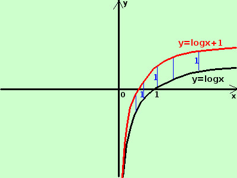

|
sviluppo y = logx + 1  e' la funzione logaritmo a base naturale (di base il numero di Nepero e) aumentata di 1, quindi il grafico della funzione y= logx va spostato verso l'alto di 1 in fondo sembra sovrapporsi, ma non e' vero, solamente non ho una matita piu' fine di un pixel: se faccio la differenza in verticale val sempre 1 Importante: sommare una costante positiva ad una funzione equivale a spostare la funzione verso l'alto di una quantita' pari alla costante |